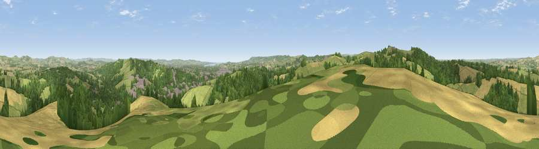

Viewpoint near Cowley
#6194 in England · top 9% of its area beats it · near CowleyThe view, rendered

A 360° render of this exact spot computed from the terrain model, tree cover and land cover — summer colours, afternoon light, calibrated against photographs of famous viewpoints. Real trees, hedges and buildings will differ in detail.
The panorama
Grey silhouette: terrain skyline in each direction (720 bearings, Earth curvature and refraction included). Dashed green: skyline with trees (+15 m) and buildings (+8 m) as obstacles. Blue strip: how far the ground is visible on each bearing.
Where the view opens
Wedge length = distance to the farthest visible ground on that bearing (vegetation-aware). Rings at 10, 25 and 50 km.
What fills the view
38% grassland · 36% woodland · 21% cropland · 5% built-up
Angular shares of the visible panorama (visual magnitude), not map area. Landscape diversity 0.53 (0–1 Shannon).
Key numbers
More beautiful places nearby
The staircase of upgrades: each row has a higher view potential than everything closer. Driving times are estimates from straight-line distance, calibrated against real road routing — check an actual route before setting out.
| Place | Direction | Drive | Score |
|---|---|---|---|
| Viewpoint near Whitestone | W · 2 km | ~5 min | 73.9 |
| Viewpoint near Whitestone | W · 3 km | ~7 min | 79.8 |
| Viewpoint near Kenn | S · 11 km | ~22 min | 80.0 |
| Viewpoint near Kenton | SSE · 14 km | ~26 min | 80.7 |
| Viewpoint near Kenton | SSE · 15 km | ~26 min | 82.9 |
| Viewpoint near Holcombe | SSE · 20 km | ~34 min | 83.3 |
| High Peak | ESE · 23 km | ~38 min | 85.3 |
| Viewpoint near Luxborough | N · 46 km | ~67 min | 85.5 |
50.74564, -3.56721 · source: screening · position refined by local search. Computed location — check access rights before visiting.